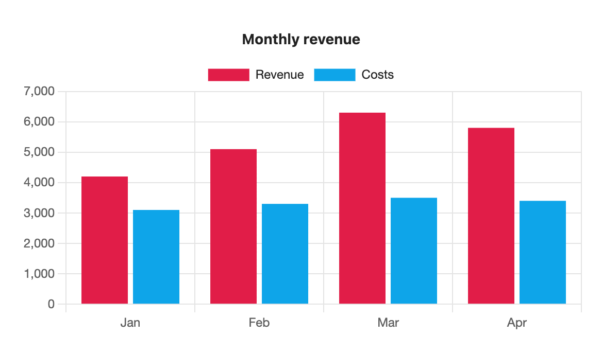

Colours and palettes
With nothing set, charts use your theme's colours. You can also define palettes in settings, or give one chart its own colours.
Theme colours
The first series takes your theme's accent colour. The rest follow the theme's named colours in this order: blue, green, orange, purple, red, cyan, yellow, pink. After nine series the order starts again.
Axis text, grid lines, the tooltip and the font also come from the theme. Switch theme, or between light and dark mode, and every open chart redraws in the new colours.

```s-chart
type: bar
title: Monthly revenue
---
| Month | Revenue | Costs |
| ----- | ------- | ----- |
| Jan | 4200 | 3100 |
| Feb | 5100 | 3300 |
| Mar | 6300 | 3500 |
| Apr | 5800 | 3400 |
```Colours for one chart
Add colors: with hex colours separated by commas. Series take them in order. On a pie or doughnut, slices take them in row order.

```s-chart
type: bar
title: Monthly revenue
colors: #e11d48, #0ea5e9
---
| Month | Revenue | Costs |
| ----- | ------- | ----- |
| Jan | 4200 | 3100 |
| Feb | 5100 | 3300 |
| Mar | 6300 | 3500 |
| Apr | 5800 | 3400 |
```Colours can be #rgb, #rrggbb or #rrggbbaa. Anything else, such as red, is skipped with a warning.
Palettes
A palette is a named list of colours you reuse across charts, such as your brand colours.
- Open Settings → S-Charts.
- Select Add palette and give it a name, such as
brand. Names use letters, numbers,-and_, up to 32 characters, and must be unique. - Set each colour with the colour picker or by typing a hex code. A palette holds 1 to 12 colours. Use the arrows to reorder them.
- Add
palette: brandto a chart.
If a chart has more series than the palette has colours, the colours repeat from the start. Palette names match without regard to capital letters.
Editing a palette redraws every open chart that uses it. Deleting one asks first, and charts that used it fall back to theme colours.
Theme colours inside a palette
A palette colour can be a theme variable such as var(--color-accent). That colour then follows the theme while the others stay fixed.
Default palette
In Settings → S-Charts, set Default palette to one of your palettes. Every chart without a palette or colors line then uses it. Set it back to Theme to return to theme colours.
Which colours win
colors:in the blockpalette:in the block- the default palette from settings
- the theme's colours
A palette: name that doesn't exist uses theme colours and shows a notice under the chart: